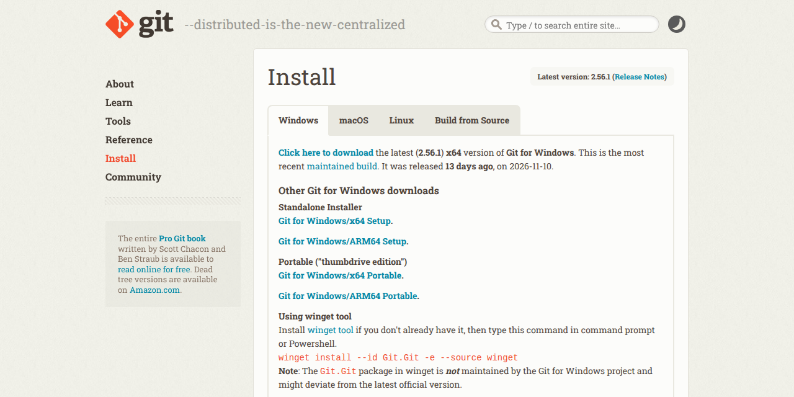
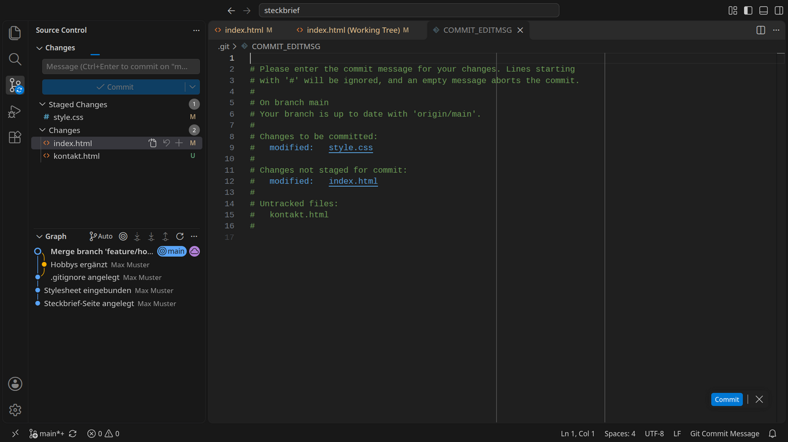
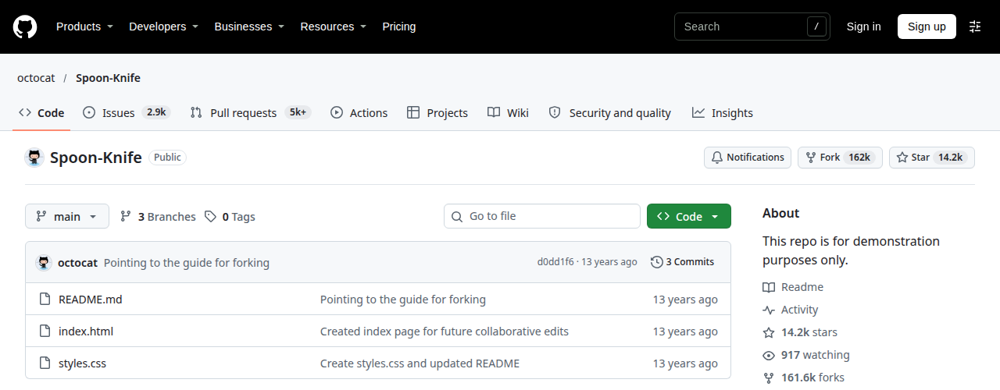

Lektion 1.2 — Teil 1: Git-Grundlagen & Werkzeuge
Git & GitHub einrichten
Lernziele
- Git installieren und die Installation im Terminal überprüfen
- In der Konsole Verzeichnisse wechseln, anlegen, verschieben und löschen
- Einen GitHub-Account sicher einrichten (Benutzername, 2FA, private E-Mail-Adresse)
- Name, E-Mail und sinnvolle Standardwerte mit
git configfestlegen - HTTPS- und SSH-Authentifizierung gegenüber GitHub unterscheiden und eine davon einrichten
- Ein Repository auf GitHub anlegen und lokal klonen
- Den ersten Commit erstellen, pushen und Änderungen mit
pullholen
1 — Git installieren
| System | Installation |
|---|---|
| Windows | Git for Windows von git-scm.com herunterladen und installieren. Enthält Git, die Git Bash (ein Terminal mit Linux-Befehlen) und den Git Credential Manager für die Anmeldung bei GitHub. |
| macOS | Im Terminal xcode-select --install ausführen (installiert die Apple-Entwicklerwerkzeuge inkl. Git) oder mit Homebrew: brew install git. |
| Linux | Über den Paketmanager, z. B. sudo apt install git (Debian/Ubuntu) oder sudo dnf install git (Fedora). |

Im Windows-Installer kannst du fast alle Voreinstellungen übernehmen. Zwei Seiten lohnen einen Blick:
- Choosing the default editor: „Use Visual Studio Code as Git's default editor“ wählen, falls VS Code installiert ist (statt des schwer bedienbaren Editors Vim).
- Adjusting the name of the initial branch: „Override the default branch name“ mit main.
Danach ein neues Terminal öffnen (Windows: Git Bash oder PowerShell) und prüfen:
git --version
# git version 2.56.1 (die genaue Nummer ist egal, ab 2.28 passt alles)2 — Die Konsole in fünf Minuten
Git bedienst du in der Konsole (auch Terminal oder Shell): Du tippst einen Befehl und bestätigst mit Enter. Unter Windows verwendest du am besten die Git Bash (im Startmenü), weil sie dieselben Befehle versteht wie macOS und Linux. Für diesen Kurs brauchst du nur eine Handvoll davon:
| Befehl | Bedeutung |
|---|---|
pwd | Wo bin ich? Zeigt den aktuellen Ordner (print working directory). |
ls, ls -a | Inhalt des aktuellen Ordners anzeigen; -a zeigt auch versteckte Einträge wie .git. |
cd dev | In den Unterordner dev wechseln. |
cd .. | Eine Ebene nach oben wechseln. |
cd ~ bzw. cd | In deinen Benutzerordner wechseln (z. B. C:\Users\max bzw. /home/max). |
mkdir notizen | Ordner notizen anlegen; mkdir -p a/b/c legt auch fehlende Zwischenordner an. |
mv alt.txt neu.txt | Datei oder Ordner umbenennen. |
mv bild.png img/ | Datei oder Ordner in einen anderen Ordner verschieben. |
cp datei.txt kopie.txt | Datei kopieren; cp -r ordner kopie kopiert einen Ordner samt Inhalt. |
rm datei.txt | Datei löschen. |
rm -r ordner | Ordner samt Inhalt löschen. |
pwd # /c/Users/max (Git Bash schreibt Windows-Pfade so)
mkdir dev # Ordner für alle Projekte anlegen
cd dev
mkdir test
ls # test
mv test spielwiese # umbenennen
rm -r spielwiese # wieder löschen
cd .. # zurück in den BenutzerordnerWas du mit rm löschst, landet nicht im Papierkorb. Prüfe vorher mit pwd und ls,
wo du bist und was du löschst.
Tab vervollständigt Datei- und Ordnernamen (cd st + Tab → cd steckbrief/). Mit ↑ holst du frühere Befehle zurück. Namen mit Leerzeichen setzt du in Anführungszeichen (cd "Meine Projekte") — besser: Projektordner gleich ohne Leerzeichen und Umlaute benennen.
Auch die Windows-PowerShell kennt pwd, ls, cd, mkdir, mv, cp und rm -r. Unterschiede: versteckte Dateien zeigt ls -Force, und mkdir legt Zwischenordner automatisch an (ohne -p). Die alte Eingabeaufforderung cmd verwendet andere Befehle (dir, md, rd /s) — nimm Git Bash oder PowerShell.
Git-Befehle wirken immer auf das Repository, in dessen Ordner du dich gerade befindest — deshalb ist cd der Befehl, den du neben Git am häufigsten brauchst.
3 — Einen GitHub-Account anlegen
Auf github.com/signup registrierst du dich mit E-Mail-Adresse, Passwort und Benutzernamen.
- Benutzername: erscheint in allen URLs (github.com/benutzername) und wird später womöglich von Lehrbetrieben oder Arbeitgebern gesehen. Wähle etwas Seriöses, z. B. Vor- und Nachname.
- Zwei-Faktor-Authentifizierung (2FA): GitHub verlangt 2FA von allen, die Code beitragen. Richte sie unter Settings → Password and authentication mit einer Authenticator-App oder einem Passkey ein und speichere die Recovery Codes sicher ab.
- E-Mail privat halten: Unter Settings → Emails „Keep my email addresses private“ aktivieren. GitHub zeigt dir dort eine Adresse der Form 12345678+benutzername@users.noreply.github.com, die du gleich für Git verwendest.
Mit einer Schul-E-Mail-Adresse kannst du unter education.github.com das kostenlose Student Developer Pack beantragen (u. a. GitHub Pro und GitHub Copilot).
4 — Git konfigurieren
Jeder Commit speichert Namen und E-Mail-Adresse der Person, die ihn erstellt hat. Git muss diese
Angaben daher kennen, bevor du den ersten Commit machst. Mit git config --global legst du
Einstellungen für alle Repositories deines Benutzerkontos fest; sie landen in
der Datei ~/.gitconfig.
git config --global user.name "Max Muster"
git config --global user.email "12345678+maxmuster@users.noreply.github.com"
git config --global init.defaultBranch main
git config --global pull.rebase false
git config --global core.editor "code --wait"| Einstellung | Bedeutung |
|---|---|
user.name | Name, der in deinen Commits steht |
user.email | E-Mail in deinen Commits. Ist sie bei GitHub hinterlegt (auch die noreply-Adresse), verknüpft GitHub die Commits mit deinem Profil. |
init.defaultBranch main | Neue Repositories beginnen mit der Hauptlinie main statt master. |
pull.rebase false | Legt fest, was git pull tut, wenn sowohl du als auch jemand anderer neue Commits erstellt haben: Git führt beide Stände mit einem zusätzlichen Zusammenführungs-Commit zusammen. Ohne Einstellung bricht git pull in dieser Situation mit einer Fehlermeldung ab. |
core.editor "code --wait" | Öffnet VS Code, wenn Git einen Text von dir braucht (z. B. eine Commit-Message). --wait lässt Git warten, bis du den Tab schließt. |

git config --global --list
git config user.email # einen einzelnen Wert abfragen--system gilt für alle Benutzer des Rechners, --global für deinen Benutzer, --local (Standard ohne Option) nur für das aktuelle Repository (Datei .git/config). Die spezifischere Ebene gewinnt — so kannst du z. B. in einem Firmenprojekt eine andere E-Mail-Adresse verwenden.
Windows beendet Textzeilen mit zwei Zeichen (CR LF), Linux und macOS mit einem (LF). Git for Windows setzt standardmäßig core.autocrlf=true: Beim Commit werden Zeilenenden zu LF, beim Auschecken wieder zu CRLF. Lass diese Einstellung so, dann gibt es im gemischten Team keine Probleme.
5 — Bei GitHub anmelden: HTTPS oder SSH
Lesen darf jeder ein öffentliches Repository, für push (und für private Repositories) musst
du dich gegenüber GitHub ausweisen. Dein GitHub-Passwort funktioniert dafür nicht
— GitHub hat die Passwort-Anmeldung für Git 2021 abgeschaltet. Es gibt zwei Wege:
| HTTPS | SSH | |
|---|---|---|
| URL | https://github.com/maxmuster/steckbrief.git | git@github.com:maxmuster/steckbrief.git |
| Anmeldung | Beim ersten Push öffnet der Git Credential Manager den Browser zur GitHub-Anmeldung; danach ist der Zugang gespeichert. Alternativ ein Personal Access Token statt Passwort. | Ein Schlüsselpaar: Der private Schlüssel bleibt am Rechner, den öffentlichen hinterlegst du bei GitHub. |
| Einrichtung | unter Windows/macOS meist automatisch | einmalig ein paar Befehle |
| Empfehlung | für den Einstieg und Schulrechner | für den eigenen Rechner, Linux, fortgeschrittene Nutzung |
Variante A: HTTPS mit Credential Manager
Unter Windows ist nichts weiter zu tun: Beim ersten git push erscheint ein Anmeldefenster
(„Sign in with your browser“). Unter macOS und Linux geht es am einfachsten mit der
GitHub CLI (gh, Installation siehe cli.github.com), die Git für dich
einrichtet:
gh auth login
# ? Where do you use GitHub? GitHub.com
# ? What is your preferred protocol? HTTPS
# ? Authenticate Git with your GitHub credentials? Yes
# ? How would you like to authenticate? Login with a web browserVariante B: SSH-Schlüssel
# 1. Schlüsselpaar erzeugen (Enter für den Standardpfad, Passphrase empfohlen)
ssh-keygen -t ed25519 -C "max@laptop"
# 2. Öffentlichen Schlüssel anzeigen und kopieren
cat ~/.ssh/id_ed25519.pub
# 3. Auf GitHub: Settings → SSH and GPG keys → New SSH key → einfügen
# 4. Verbindung testen
ssh -T git@github.com
# Hi maxmuster! You've successfully authenticated, but GitHub does not provide shell access.Bei GitHub hinterlegst du nur die Datei mit der Endung .pub. Die Datei
id_ed25519 ohne Endung ist dein privater Schlüssel — wer sie hat, kann in deinem Namen pushen.
6 — Ein Repository auf GitHub anlegen
Oben rechts auf GitHub → + → New repository:
| Feld | Empfehlung |
|---|---|
| Owner / Repository name | dein Account, Name in Kleinbuchstaben mit Bindestrichen, z. B. steckbrief |
| Description | ein Satz, worum es geht |
| Public / Private | Public: jeder kann lesen (nicht schreiben!). Private: nur du und eingeladene Personen. |
| Add README | aktivieren — dann ist das Repository nicht leer und kann sofort geklont werden. Die Datei README.md wird auf der Startseite des Repositorys angezeigt. |
| .gitignore / License | vorerst „None“ (Thema in Lektion 1.3) |
Nach Create repository findest du über den grünen Button Code die URL zum Klonen — je nach gewählter Anmeldung unter dem Reiter HTTPS oder SSH.

7 — Klonen: das Repository auf den Rechner holen
cd ~/dev # Ordner für deine Projekte
git clone https://github.com/maxmuster/steckbrief.git
cd steckbrief
ls -a
# . .. .git README.md
git clone legt einen Ordner mit dem Namen des Repositorys an, lädt die gesamte Historie
in .git herunter und stellt die Dateien des neuesten Commits ins Arbeitsverzeichnis. Außerdem
merkt sich Git die Herkunft als Remote mit dem Namen origin:
git remote -v
# origin https://github.com/maxmuster/steckbrief.git (fetch)
# origin https://github.com/maxmuster/steckbrief.git (push)
git status
# On branch main
# Your branch is up to date with 'origin/main'.
#
# nothing to commit, working tree clean
git status ist der wichtigste Befehl überhaupt: Er sagt dir, wo du stehst. origin/main
ist Gits Erinnerung daran, wie main auf dem Server beim letzten Kontakt aussah. „up to date“
heißt: Lokal und am Server ist (nach Gits Wissen) derselbe Stand.
8 — Der erste Commit und der erste Push
Kopiere eine Datei in den Ordner und frag Git nach dem Status:
git status
# On branch main
# Your branch is up to date with 'origin/main'.
#
# Untracked files:
# (use "git add <file>..." to include in what will be committed)
# index.htmlUntracked heißt: Die Datei liegt im Ordner, Git verfolgt sie aber noch nicht. Mit git add merkst du sie für den nächsten Commit vor (Staging Area), mit git commit speicherst du den Schnappschuss:
git add index.html
git status
# Changes to be committed:
# (use "git restore --staged <file>..." to unstage)
# new file: index.html
git commit -m "Steckbrief-Seite angelegt"
# [main b203833] Steckbrief-Seite angelegt
# 1 file changed, 11 insertions(+)
# create mode 100644 index.html-m übergibt die Commit-Message direkt. Ohne -m öffnet Git den eingestellten Editor. Jetzt ist der Commit lokal gespeichert — GitHub weiß davon noch nichts. Das ändert git push:
git push
# Enumerating objects: 4, done.
# ...
# To https://github.com/maxmuster/steckbrief.git
# f437d39..b203833 main -> mainDie letzte Zeile bedeutet: main am Server wurde von Commit f437d39 auf b203833 weitergeschoben. Lade die Repository-Seite auf GitHub neu — index.html ist da.
Änderungen holen mit pull
Ändert jemand anderer das Repository (oder du selbst über die GitHub-Weboberfläche oder auf einem zweiten Rechner), holst du die neuen Commits mit git pull:
git pull
# From https://github.com/maxmuster/steckbrief
# b203833..4c1e2f7 main -> origin/main
# Updating b203833..4c1e2f7
# Fast-forward
# README.md | 2 ++
# 1 file changed, 2 insertions(+)Hast du schon einen Projektordner ohne Git, kannst du ihn mit git init zu einem Repository machen und anschließend mit einem leeren GitHub-Repository (ohne README) verbinden:
git init
git add .
git commit -m "Initial commit"
git remote add origin https://github.com/maxmuster/projekt.git
git push -u origin maingit add . merkt alle Dateien im aktuellen Ordner vor. -u (upstream) verknüpft das lokale main mit origin/main; danach genügen git push und git pull ohne weitere Angaben. Beim Klonen ist diese Verknüpfung automatisch vorhanden.
Projektschritt
Das Steckbrief-Repository anlegen und den ersten Commit pushen
- Lege auf GitHub ein öffentliches Repository
steckbriefmit README an. - Klone es in deinen Projektordner (nicht in
steckbrief-entwurf!). - Kopiere
index.htmlaus Lektion 1.1 in den geklonten Ordner. - Committe und pushe die Datei:
git clone https://github.com/<dein-name>/steckbrief.git
cd steckbrief
cp ../steckbrief-entwurf/index.html .
git status
git add index.html
git commit -m "Steckbrief-Seite angelegt"
git push- Bearbeite auf GitHub die Datei
README.md(Stift-Symbol), schreibe einen Satz über das Projekt und klicke Commit changes. - Hole die Änderung mit
git pullauf deinen Rechner und kontrolliere den Inhalt vonREADME.md.
Ergebnis: Dein Repository auf GitHub enthält README.md und index.html, und dein lokaler Stand ist identisch.
Häufige Fehler
3 Fehler · zum Aufklappen klicken
Der erste Commit bricht ab mit Author identity unknown — Please tell me who you are.
Einmalig git config --global user.name "…" und git config --global user.email "…" ausführen, dann den Commit wiederholen.
Beim Push fragt das Terminal nach Benutzername und Passwort; die Eingabe des GitHub-Passworts endet mit Support for password authentication was removed.
Den Credential Manager bzw. gh auth login verwenden, ein Personal Access Token als Passwort eingeben oder auf SSH umsteigen (Abschnitt 5).
git status meldet fatal: not a git repository (or any of the parent directories): .git — nach dem Klonen wurde nicht in den neuen Ordner gewechselt.
Mit pwd prüfen, wo du bist, und mit cd steckbrief in den Repository-Ordner wechseln.
Aufgaben
3 Aufgaben + Bonus · zum Aufklappen klicken
Führe git --version und git config --global --list aus. Notiere, welche Werte gesetzt sind, und erkläre jeden in einem Satz. Prüfe auf deinem GitHub-Profil, ob dein Commit aus dem Projektschritt mit deinem Avatar verknüpft ist — wenn nicht: Welche Einstellung stimmt nicht?
Lege lokal einen neuen Ordner notizen mit einer Datei git.md an, in der du die Befehle dieser Lektion mit einer kurzen Erklärung sammelst. Mache daraus mit git init ein Repository, lege auf GitHub ein leeres Repository an und verbinde beide (Callout am Ende von Abschnitt 8).
Klone dein steckbrief-Repository ein zweites Mal in einen Ordner steckbrief-2 (git clone <url> steckbrief-2). Ändere in steckbrief-2 die Überschrift, committe und pushe. Wechsle in den ersten Klon, führe zuerst git status, dann git pull und wieder git status aus. Erkläre, warum der erste git status noch „up to date“ meldet.
Richte einen SSH-Schlüssel ein (Abschnitt 5, Variante B) und stelle dein Repository mit git remote set-url origin git@github.com:<name>/steckbrief.git auf SSH um. Prüfe mit git remote -v und einem Push.
Quiz
5 Fragen · zum Aufklappen klicken
Frage 1 Warum muss user.email vor dem ersten Commit gesetzt sein?
Frage 2 Womit kannst du dich beim Push zu GitHub anmelden?
Mehrere Antworten sind richtig.
Frage 3 Was macht git clone <url>?
origin gespeichert.Frage 4 git status zeigt eine Datei unter Untracked files. Was bedeutet das?
git add nimmt sie in die Staging Area auf.Frage 5 Du hast committet. Was gilt vor dem git push?
git push überträgt sie zum Remote.